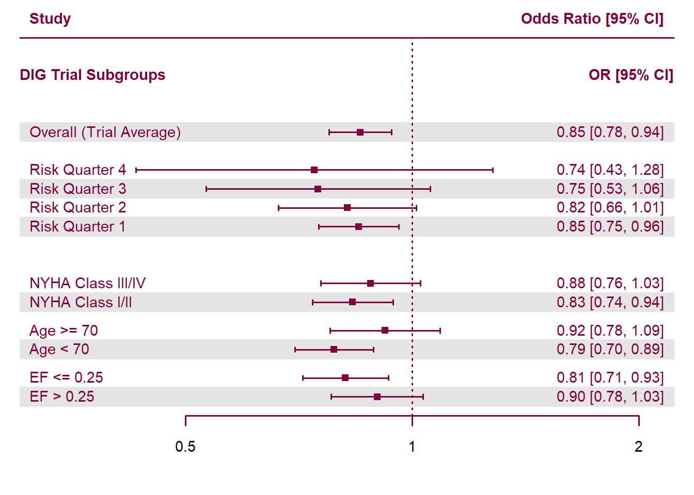
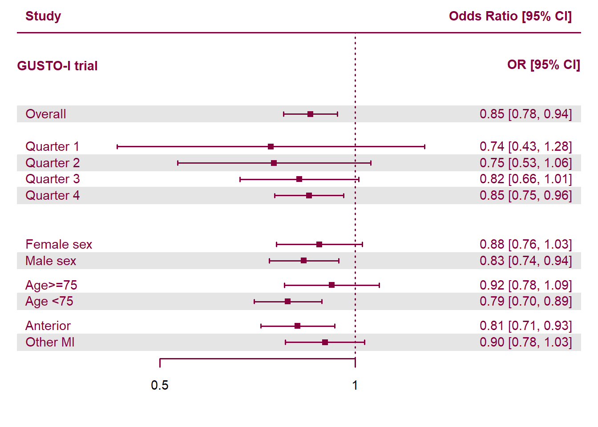
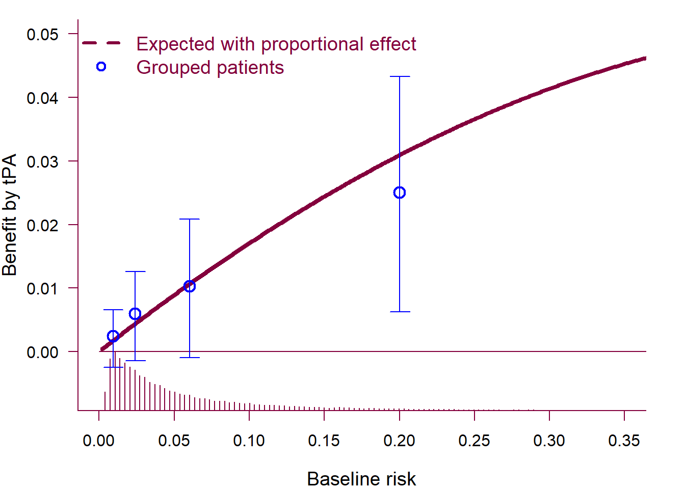

Predictive Approaches to Treatment Effect Heterogeneity
Tom Delany, Misgana Ojamo1
1 School of Mathematical and Statistical Sciences, University of Galway
Background
• Relying on average trial effects ignores that patients differ in demographics, disease severity, and behaviors - termed patient Heterogeneity (HTE) 1, crucially, these factors may modify the effectiveness of treatment.
• Traditional subgroup analyses (one variable at a time) have low power, high false positives, and aren’t truly patient-centred.
• Predictive Approaches to Treatment effect Heterogeneity (PATH) model risk and treatment effects to estimate individual patient outcomes across treatments 2.
Objectives
- Implement and evaluate predictive HTE models across multiple clinical datasets
- Compare risk-based and effects-based approaches in practice
- Assess the clinical relevance and reporting implications of PATH analyses
Data Sources
Analyses are based on published clinical trial data from the GUSTO-I trial 3 and the Digitalis Investigation Group trial 4.
• The GUSTO trial was an international, randomized clinical trial comparing four thrombolytic strategies in 41,021 patients with acute myocardial infarction, conducted from 1989–1993, showing that accelerated t-PA with intravenous heparin reduced 30-day mortality compared with streptokinase-based regimens.
• The DIG trial was a randomized, double-blind, multicentre clinical trial of digoxin vs placebo in 6,800 heart-failure patients conducted from 1991–1995 with a mean 37-month follow-up, showing no reduction in overall mortality but fewer hospitalizations for worsening heart failure with digoxin.
Early Results

Figure 1: DIG- Trial, Forest plot of treatment heterogeneity
DIG trial forest plot showing treatment-effect heterogeneity across baseline risk strata and key prognostic subgroups (ejection fraction, age, NYHA class, and risk quartiles). Points represent odds ratios and horizontal lines indicate 95% confidence intervals; the vertical line denotes no effect (OR = 1).

Figure 2: Forest plot of treatment heterogeneity
Above is a Forest Plot which display the PATH (risk-based) subgroups alongside traditional subgroups (Age, Sex, Location of MI). Low risk according to the linear predictor (lp<-2.36) implies low benefit (<1%); higher risk, higher benefit (>2%).

Figure 3: Absolute treatment benefit increases with baseline risk
The solid maroon curve shows the expected absolute risk reduction under a proportional treatment effect model, illustrating increasing benefit with higher baseline risk. Blue points show observed absolute risk reductions within risk-based subgroups, with 95% confidence intervals.
Next Steps
We plan to conduct further analysis on the International Stroke Trial5 and the National Lung screening Trial 6, to evaluate the generalizability of predictive approaches to treatment-effect heterogeneity across different clinical domain. We also plan to implement a machine-learning approach using causal forests for patient risk prediction 7.
We will use the grf package for this.
GitHub
The code and datasets for this project can be viewed at our GitHub repository here: https://github.com/tomdelany04/PATH-Master/
References
Kent et al. 2020, doi: 10.7326/M18-3668↩︎
Willke et al. 2012, doi: 10.1186/1471-2288-12-185↩︎
The GUSTO investigators, 1993, doi: 10.1056/NEJM199309023291001↩︎
The Digitalis Investigation Group, Feb. 1997, doi: 10.1056/NEJM199702203360801↩︎
Sandercock et al., 2011, doi: 10.1186/1745-6215-12-101↩︎
The National Lung Screening Trial Research Team, 2011, doi: 10.1056/NEJMoa1102873↩︎
Jawadekar et al., 2023, doi: 10.1093/aje/kwad043↩︎